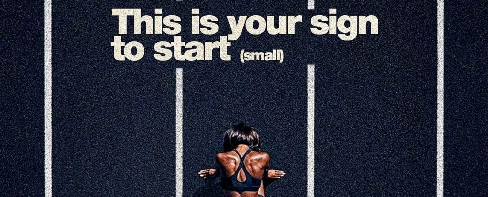
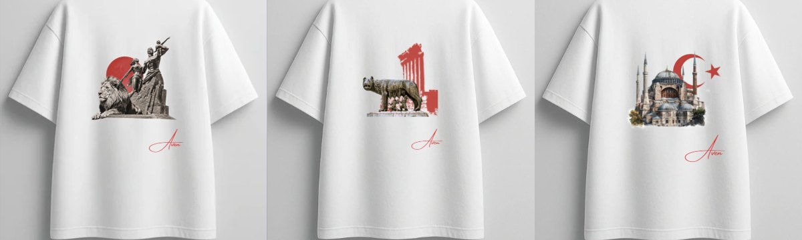

DYA
Mini interface pour apprendre le langage du football : leçons, quiz, notes et assistant IA.
Voir le projetDeux projets, deux univers : un produit pour apprendre le football et une expérience digitale autour du sport.
Mini interface pour apprendre le langage du football : leçons, quiz, notes et assistant IA.
Voir le projet
Un univers digital autour de deux athlètes : quotidien, conseils, interview et reportage.
Voir le projet
Boutique en ligne d’une marque de t-shirts, avec un premier drop inspiré du tour du monde.
Voir le projet« Snacks sains et gourmands » : un e-book de +30 recettes réalisé en stage, à deux, autour des produits Keyaa.
Voir le projetPlateforme de gestion d’une fédération sportive : espace public (résultats, joueurs, clubs) et espace administration.
Voir le projet